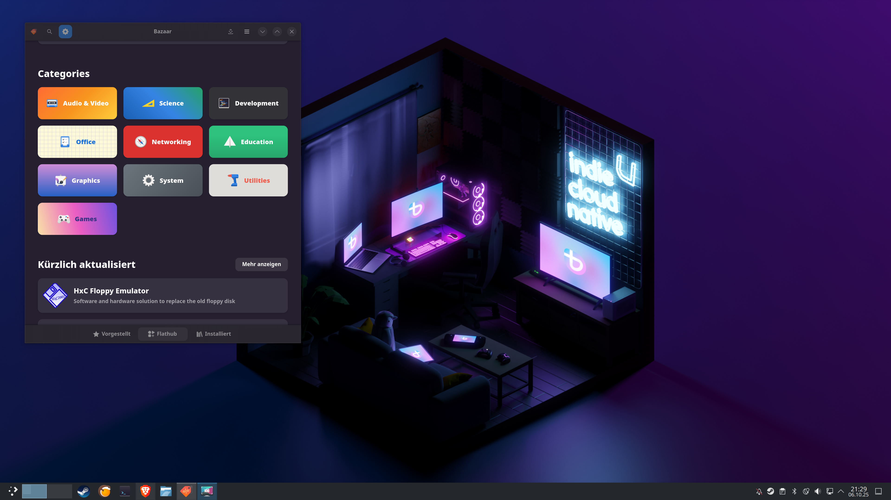

Bazzite

Bazzite is an immutable, Fedora-based distro built from the ground up for gaming. It has day-one support for Steam Deck hardware and gaming handhelds, ships with Valve's gaming optimizations, and comes in dedicated editions for desktop PCs, HTPCs, and handheld devices. The immutable base means the OS stays reliable no matter what you install.
Desktop Environment
KDE Plasma / GNOME
Package Manager
rpm-ostree / Flatpak
Latest Release
Rolling (image-based)
Init System
systemd
Support Cycle
Rolling
Architecture
x86_64
Key Features
- Day-one Steam Deck and gaming handheld hardware support
- Immutable base OS, the system stays stable and predictable
- Valve's gaming patches and kernel optimizations built in
- HDR support on compatible displays
- Dedicated HTPC and handheld device editions
- Automatic updates, the OS updates itself like a console